This website is about katanas. They are pretty cool.
What is a katana?
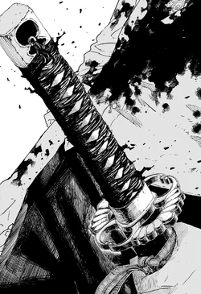
A katana is a traditional Japanese sword known for its long, slightly curved blade, single cutting edge, and exceptional sharpness. Originally carried by samurai, it was designed for swift, precise strikes in combat. Today, the katana is admired worldwide as a symbol of Japanese craftsmanship, history, and martial arts.
Cultural Significance
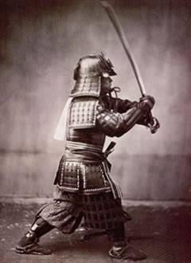
The katana is an important symbol of Japanese culture, representing the values of honor, discipline, and loyalty associated with the samurai. Beyond being a weapon, it is regarded as a work of art that reflects centuries of skilled craftsmanship and tradition.
Katanas today
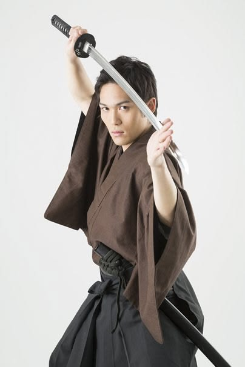
Today, the katana is widely viewed as a symbol of Japanese heritage, craftsmanship, and tradition. It is valued by martial artists, collectors, and historians, while also being popular in films, anime, video games, and other forms of media. Although no longer used in warfare, the katana continues to be admired for its beauty, historical significance, and cultural importance.
History
This page details the katana's origins and history.
Origin
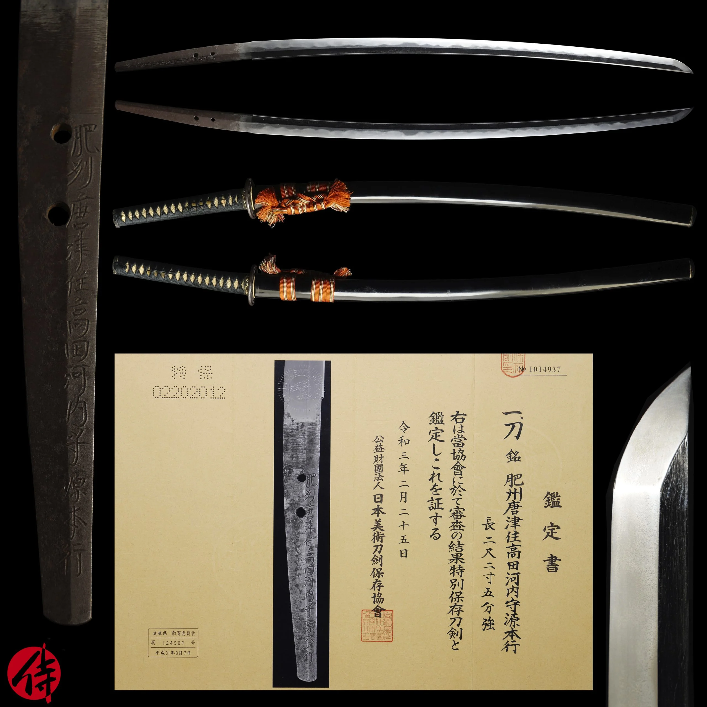
The katana originated in Japan during the late Kamakura period (1185–1333). It was developed from earlier Japanese swords to better suit the changing needs of samurai warfare. Its curved blade and long grip allowed for faster drawing and more effective cutting, making it one of the most iconic weapons in Japanese history.
Usage of katana in war
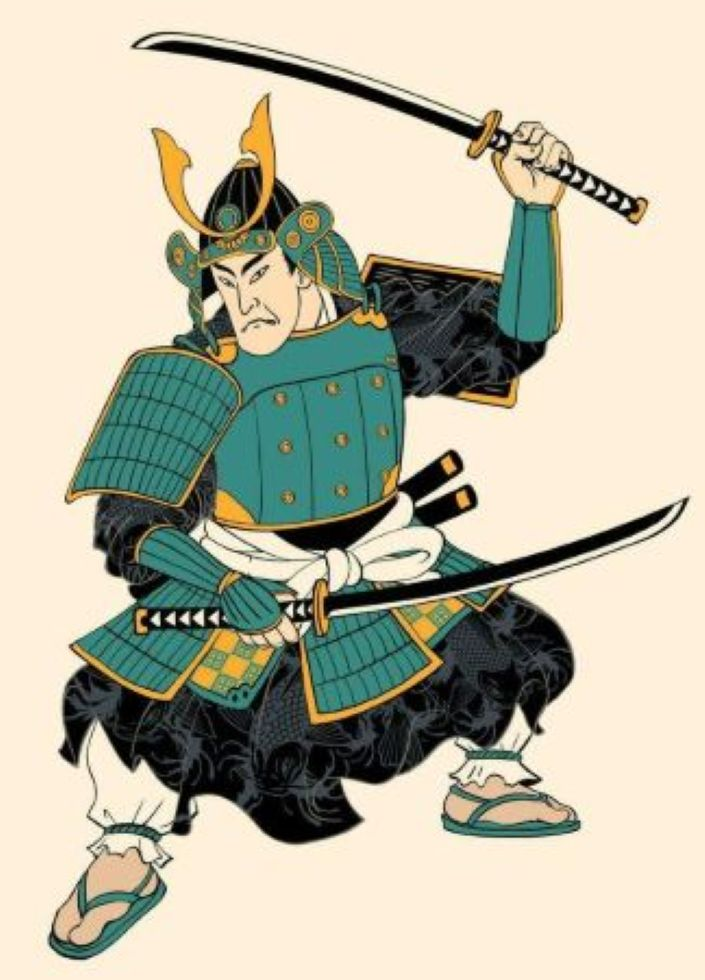
The katana was primarily used by samurai as a close-combat weapon during feudal Japan. While spears and bows were often the main weapons on the battlefield, the katana was drawn when fighting at close range or as a backup weapon. Its sharp, curved blade made it effective for quick, precise slashing attacks.
Usage of katana in religion
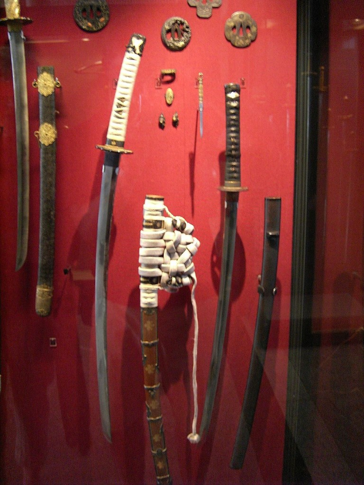
The katana has spiritual significance in Japanese tradition, particularly within Shinto. Swords have long been regarded as sacred objects that symbolize purity, protection, and divine power. Some katanas were dedicated to shrines or used in religious ceremonies, where they served as ceremonial offerings rather than weapons.
Forging
This page details how a katana is made.
Tamahagane
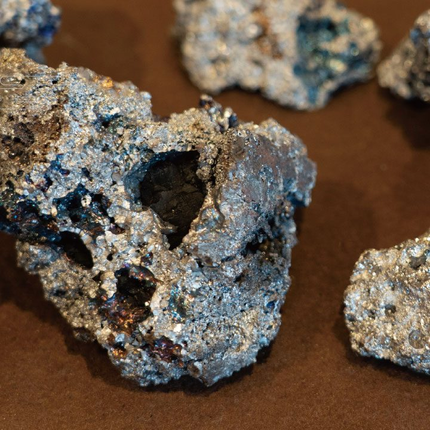
Tamahagane is a traditional Japanese steel used to forge high-quality katanas. It is produced by smelting iron sand in a clay furnace called a *tatara*. Known for its strength and ability to hold a sharp edge, tamahagane allows swordsmiths to create blades that are both durable and flexible through careful forging and folding techniques.
How a katana is made
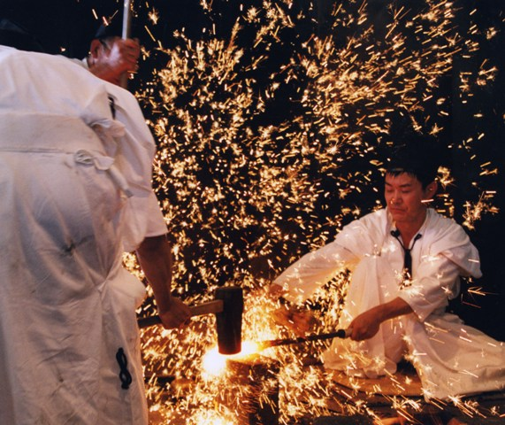
A katana is made by heating and folding tamahagane steel multiple times to remove impurities and improve its strength. The blade is then shaped, coated with clay, and heated before being quenched in water to create a hard edge and a flexible spine. Finally, the sword is polished, sharpened, and fitted with its handle, guard, and scabbard.
Finishing touches
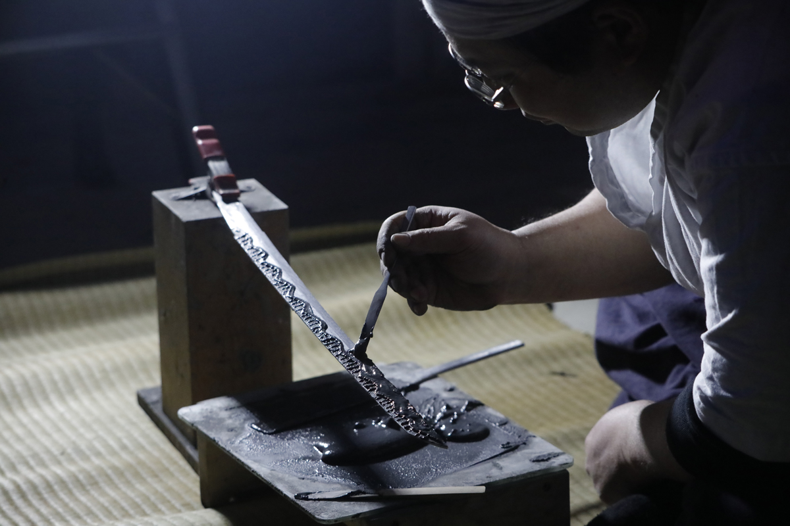
The finishing touches of a katana involve carefully polishing the blade to reveal its sharp edge and distinctive hamon (temper line). The sword is then fitted with a handle (tsuka), guard (tsuba), and scabbard (saya). These final steps enhance the katana's appearance, balance, and functionality, completing it as both a weapon and a work of art.
Relevance
This page details the presence of katanas today.
Iaido
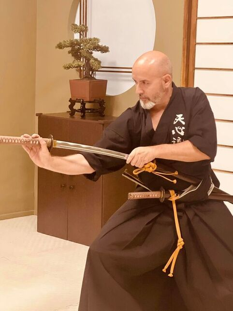
In Iaidō, the katana is used to practice smooth, controlled movements that focus on drawing, cutting, and returning the sword to its scabbard. Practitioners train to develop precision, discipline, and mental focus rather than engage in combat. Today, Iaidō preserves the traditional techniques and spirit of Japanese swordsmanship.
Pop Culture
The katana is a popular symbol in modern pop culture, appearing in movies, anime, video games, and comic books. It is often associated with skilled warriors, honor, and precision, making it an iconic weapon for many fictional characters. Its distinctive design and rich history have made the katana one of the most recognizable swords in the world.
Art
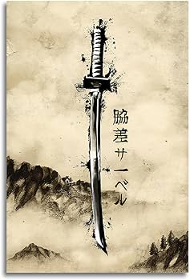
The katana is widely regarded as a work of art due to its elegant design and the craftsmanship involved in its creation. Skilled swordsmiths carefully forge, polish, and decorate each sword, making every katana unique. Today, many historic katanas are displayed in museums and private collections, where they are admired for both their beauty and cultural significance.
Katana Quick Draw
Click the spacebar or CUT! when it tells you to draw!